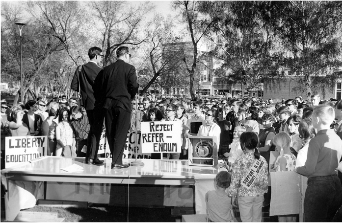

Controversy
“...opposing factions declared what amounted to open warfare (C. J. Schott: unpublished paper on site controversy, Spring, 1969). In a "veritable flood of protests," dedicated antagonists [to locating campus west of the Oldman] conjured up visions of a "divided city", a "Berlin Wall", "dangerous" traffic hazards, and most of all exorbitant costs falling upon the hapless taxpayers" (Holmes, 1972, p. 118).
The North Lethbridge Businessmen's Association soon joined the fray.... Not surprisingly, the association promoted a north location for the university.... A smaller and quieter chorus in support of the university's decision could be faintly detected in the background[, r]]allying behind the slogan "West is Best" (Holmes, 1972, p. 118).
[It]] was an event transcending description — one of those true life incidents stranger than fiction, a sort of a southern Alberta version of Tennessee's Scopes trial. The press was out in full force, geared with batteries of recording equipment to capture every nuance of the show of the decade. The deficiencies of the basement hall, low ceiling, close atmosphere, abundant pillars, poor acoustics, and backbreaking chairs, served only to heighten the drama. For the first time I heard Landeryou pull out all the stops, and he was superb. The crowd lapped it up, eagerly responding to his rhetorical questions, thunderously applauding his devastating denunciations, hilariously enjoying his quips, and enthusiastically clapping for encores. Andy Anderson, not widely renowned as an inspiring speaker, responded to the singular challenge with a fiery oration. Asael Palmer and Neil Holmes, fellow agrarians but in opposite camps, waxed earnestly and convincingly eloquent. They and the many others who crashed the platform were rewarded with exuberant catcalls and cheers. From my point of view, the most remarkable episode was the performance of a rotund gentleman who for several minutes bewildered the crowd with an intermittent inarticulate flow of disjointed phrases, all the while staring distantly at a far corner of the ceiling. Warming to the task with growing forcefulness and coherence, he finally came through as a small-time realtor who avidly supported the city's decision to buy up developable land on the west bank as a defence against giant speculators. Suddenly he ran to the wall behind the platform, and, with a series of wild gesticulations, drew imaginary maps to prove his points, much to the distress of the apoplectic hotel manager at the back of the room who feared for the disfigurement of his expensive new wall decorations. Soon, lo and behold, the speaker began to fling about some of the sleezier facts of real estate speculation that had gone on around the college site. When he started dropping names, glances around the hall revealed a few individuals cringing down in their seats in a frantic search for anonymity. The ultimate scene with Landeryou vainly flailing his arms to recapture the attention of the noisily disintegrating crowd was a priceless spectacle. But he was to have the last laugh when the Reierson referendum reared its ugly head a few months later" (Holmes, 1972, p. 138-9).
“During spontaneous gatherings throughout the day and night strategy was fashioned, tempered and refined. A small minority maintained that all energies should be expended in an intensive campaign to win the referendum. However they were unable to counter the contention of the majority that Reierson's referendum was unworthy nonsense, political bunkum of the worst sort, and its wording preposterous. The west side site was the present site. There was no other and never had been. ...With their attention properly concentrated upon preventing the university from becoming a political punching bag for every demagogue and sychophant in sight, all finally resolved to resist the pernicious plebiscite with every available weapon, including ultimately the courts. G. Campbell became the informal representative of the campus in liaison with the various community groups that were spontaneously arising in outraged indigation at the latest government affront. J. T. Hamilton masterminded an imaginative publicity campaign that, among other things, emblazoned the slogan SUPPORT U of L — INTEGRITY . . . AUTONOMY in brilliant orange banners upon the bumpers of an astonishing number of automobiles in and around the city. Student leaders such as B. Shaw and R. Wutzke worked around the clock with members of the faculty in constructing plans for a massive demonstration to dramatize the university's cause. On Saturday May 18, N. D. Holmes and other members of the board personally presented Reierson and Speaker with a written version of the university's response to the notion of a referendum. Then all donned gowns for convocation. (Holmes, 1972, p. 128).